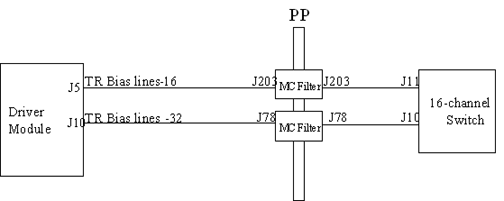

Illustration 11: System MC Circuit Path

Table 2: System MC Circuit Path
| System Type | Channel # | Coil Ports | Driver Module | Pen Panel/MC Filter | 16-ch Switch | I/R Filter Box | Coil Connector | |
|---|---|---|---|---|---|---|---|---|
| Upgrade | 8ch & 16ch | Bendix Ch 1-8, MCBias 17-24, refer to Upgrade System, Fault on MC Bendix Connector | J10 DM to J78 Pen Panel | J78 Pen Panel to J10 on 16ch Switch | J19 16ch Switch to J9 Multicoil Assy | N/A | Multicoil Assy to Connector | |
| Connector A Ch 1-8, MCBias 1-8, refer to Upgrade System, Fault on Connector A & B only | J5 DM to J203 Pen Panel | J203 Pen Panel to J11 on 16ch Switch | J18 16ch Switch to J12 LPCA Bulkhead | N/A | J12 Bulkhead to Connector Port | |||
| Connector B Ch 1-8, MCBias 9-16, refer to Upgrade System, Fault on Connector A & B only | J5 DM to J203 Pen Panel | J203 Pen Panel to J11 on 16ch Switch | J17 16ch switch J22 LPCA Bulkhead | N/A | J22 Bulkhead to Connector Port | |||
| Forward Prod | 8ch & 16ch | Connector A Ch 1-8 MCBias 1-8, refer to Forward Production, Fault on Connector A | J5 DM to J203 Pen Panel | J203 Pen Panel to J11 of 16ch Switch | J18 16-ch switch to J21 MC I/F Box | MC Interface box to Connector | MC Interface box to Connector | |
| Connector B Ch 1-8 MCBias 9-16, refer to Forward Production, Fault on Connector B, Coil Ch 1-8 (Bias Ch 9-16) ONLY | J5 DM to J203 Pen Panel | J203 Pen Panel to J11 of 16ch Switch | J17 16ch switch to J6 Image Reject Filter box | Image Reject Filter box J1 to LPCA Bulkhead | LPCA Bulkhead to Connector Port | |||
| 16ch | Connector B Ch 9-16 MCBias 17-24, refer to Forward Production, Fault on Connector B, Coil Ch 9-16 (Bias Ch 17-24) ONLY | J10 DM to J78 Pen Panel | J78 Pen Panel to J10 of 16ch Switch | J19 16ch switch to J8 Image Reject Filter box | Image Reject Filter box J3 to LPCA Bulkhead | LPCA Bulkhead to Connector Port | ||